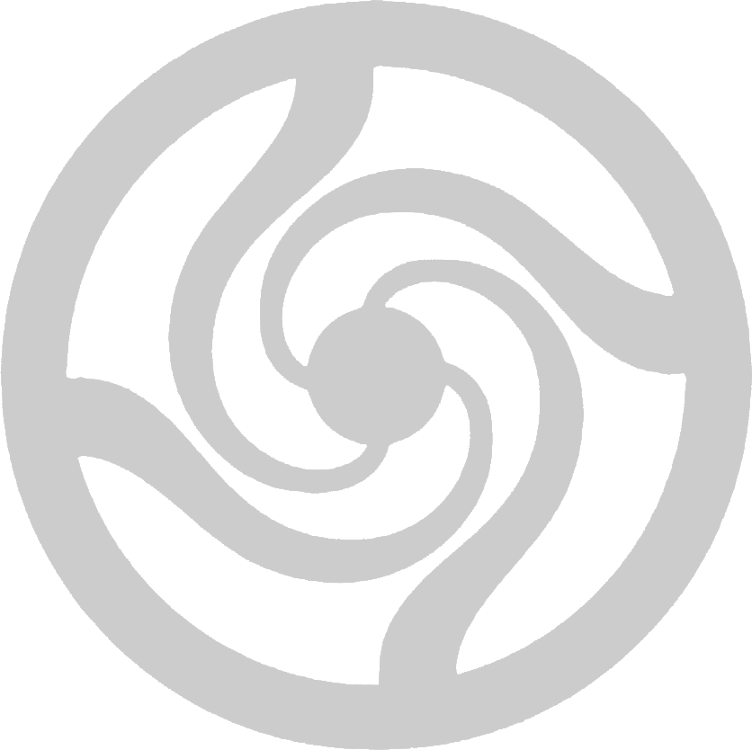

Experience
My roles, leadership, and technical background — all in one place.
NOTE: The resume is a one-page, concise overview. For a more accurate understanding and detailed insight, please read below.
Activities & Leadership
- Lab Intern, Stuy Biology Lab: Prepare solutions, set up experiments, and support weekly labs for 900+ freshmen.
- President, Stuy Cultural Preservation Society: Revived the club, designed branding, organized hands-on cultural activities, and directed an educational play.
- Admin (Trial), Metis Project: Tutor struggling students in math and help manage admin operations.
- Co-President, Hindu Students Council): Planned school-wide Diwali and Holi events.
- Student Researcher, NASA GeneLab:
 Student intern for the GeneLab for High Schools (GL4HS) summer training program hosted (virtually) at NASA Ames Research Center.
During the training period, I learnt how to use bioinformatics tools and use Jupyter notebooks to analyze guided metadata sets.
Assembled a team of 4 individuals including myself to analyze a metadata set using our newly acquired skills and personal talents.
Selected the spaceflight omics dataset, OSD-771, and conducted weeks of background research and direct data analysis on the information collected on RNA levels of genes found in kidney tissue.
From our analysis, we proposed the hypothesis regarding microgravity and immune conditions.
Selected as one of 40 groups to participate in the Capstone which involved preparing and presenting a hypothesis-driven research proposal as a team of 4.
From this competitive synposis, selected as one of the top 10 and advanced to next stage of proposal competition.
Developed a full research proposal; As was selected as one of the top 4 proposals, we are fully sponsored for going to the ASGSR conference to present a poster on our research.
Skills
Racket, NetLogo, CAD (OnShape), PCR, Gel Electrophoresis, Scientific Writing, Data Analysis
Currently learning Python + HTML/CSS